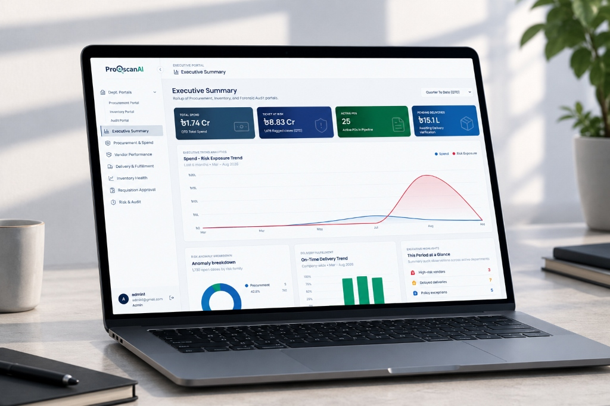

ProQscan AI: Enterprise Procurement, Inventory & Forensic Audit Platform
Transforming chaotic, multi-crore paper & spreadsheet procurement into a unified 4-engine digital defense system that detects fraud, enforces 3-way matching, and gives leadership real-time spend control.

Procurement should not live in disconnected systems.
When purchasing, inventory, and accounting don't talk, data leaks. Traditional enterprises manage millions across disjointed tools, creating blind spots where vendor price inflation, unbilled deliveries, and invoice fraud thrive.
Siloed Tools & Data Leakage
Departments work in isolation with no single source of truth, causing delayed audits and multi-crore budget hemorrhages.
-
✕
ERP System: Purchase Orders created in isolation with no live check on current warehouse stock.
-
✕
Warehouse Software: Receiving logged on paper or disconnected sheets, leaving quantity/quality discrepancies unflagged.
-
✕
Accounting Tools: Invoices paid blindly without verifying what physically arrived at the loading dock.
-
✕
Audit Nightmare: Fraud and price manipulation only discovered months later during retroactive post-audits.
Unbroken Operational Audit Trail
A unified data layer reconciling requisitions, warehouse goods receipts, and invoices in real time before funds release.
-
✓
Requisition & PO: Digitally generated, spec-checked, and tied directly to real-time inventory balances.
-
✓
Inventory Receiving: Automatic 3-way match against original PO items, quantities, and star-rated delivery condition.
-
✓
Forensic Audit Engine: 9 risk vectors scanned automatically with Benford's Law invoice manipulation tests.
-
✓
Executive Intelligence: Live C-suite visibility into company-wide spend, risk tickets, and vendor scorecards.
Four specialized engines. One unified operational spine.
Each portal is designed for its specific operator's cognitive workflow while feeding into a single, tamper-proof relational data pipeline.
Inventory Portal (InventoryAudit)
- Warehouse Control KPIs: Real-time tracking of Total Inventory Value, Low Stock Alerts, Slow-Moving Items (6+ months dormant), and Avg. Rejection Rates.
- Log Rejection by Procurer: Ranked bar list tracking buyer quality issues with automated callouts identifying the worst-offending procurement officer.
- Stock IN "Log Delivery" Modal: Enables warehouse receiving officers to record GRN details, bill numbers, received quantities, and star-rated product quality ratings before PO acceptance.
- Material Issue Register: Searchable disbursement log with category/sub-category, item ID, TS ID, quantity, recipient, and requesting department tracking.
- Historical Transaction Ledger: Full expandable ledger per addition/removal with PO/GRN cross-references and decision badges.
Forensic Audit Portal (Audit Engine)
- Risk Exposure KPIs: Tracks Transactions Scanned, Anomalies Flagged, and Total Financial Risk Exposure with 30/90-day/YTD interval toggles.
- Case Disposition Pipeline: Structured 4-stage audit workflow: Detected → Check Required → Action Taken → Cleared with immutable investigator notes.
- 9-Vector Anomaly Scanner: Filters flagged items across 9 risk types: Price Inflation, Overbilled, Under-Delivered, Pending Orders, Unbilled Deliveries, Excess GRN, Supplier Favoritism, Missing CS, and Duplicate Billing.
- Benford's Law Audit Engine: Chi-squared statistical algorithm evaluating invoice leading-digit distribution to detect artificial billing numbers, complete with plain-language explainers and "Manipulation Detected" alert banners.
- Evidence File Drilldown: Opens Comparative Statement baseline, delivery logs, vendor history, and product quality stars for airtight compliance resolution.
Executive Portal (Vendor Auditor Engine)
- 6 Core Executive KPI Tiles: High-contrast cards displaying Total Spend (৳ Taka), Ticket at Risk, Active POs in Pipeline, Pending Deliveries, and Overdue Values.
- Spend vs. Risk Exposure Curve: 6-month dual-curve graph exposing the direct correlation between procurement volume spikes and detected risk spikes.
- Vendor Performance Matrix: Top-tier vendor spend concentration, newly flagged suppliers, and complete scorecard distribution (score bar, rating badge, order volume).
- Department Portals Drill-Down: Allows C-suite leaders to view the platform through a specific officer's operational lens (e.g. "Viewing Procurement Officer: Rahul Ahmed").
- Ask Auditor AI: Floating natural language assistant offering quick prompts ("What needs immediate attention?", "Summarize QTD risk exposure").
Procurement Portal (VendorAudit)
- Dual-Mode PO Generation: Supports Drag-and-Drop Requisition File Parsing as well as a guided 3-step manual builder (PO Info → Requisition Details → Item Specs).
- Comparative Statement (CS) Sourcing: Direct entry or upload of supplier quotes with automated calculation of best/lowest prices and inflation percentage warnings.
- Vendor Evaluation & History: Compares candidate suppliers against historical max prices, fulfillment rates, lead times, and past delivery behavior scores.
- Active Procurement Tracking: Real-time stage monitor (Overdue, In Transit, Awaiting Dispatch) with overdue warnings and delivery logs detail tabs.
- Vendor Behavior Ratings: Closes the loop upon order fulfillment with mandatory vendor experience notes and quality star evaluations.
Designing for high data density without cognitive fatigue.
Enterprise tools often fail because they dump uncurated spreadsheets onto users. ProQscan AI was designed around progressive disclosure, unambiguous risk colors, and zero-confusion reconciliation.
1. Color-Coded Forensic Risk Semantics
We implemented a strict, non-negotiable color grammar across all 4 engines:
- Emerald Green: Verified 3-way match, healthy inventory levels, and compliant on-time vendor fulfillments.
- Amber / Orange: Pending approval, unbilled deliveries awaiting verification, or items flagged for standard review.
- Crimson Red: Critical anomalies, Benford's Law invoice manipulation warnings, duplicate bills, and severe price inflation.
- Executive Navy / Blue: Strategic governance metrics, roll-up timelines, and executive intelligence indicators.
2. Progressive Disclosure in Complex Modals
Rather than overwhelming warehouse clerks with multi-page accounting forms:
- Contextual Modal Sliders: "Log Delivery" and "Record Material Issue" isolate required fields into bite-sized numbered steps.
- Inline Calculations: Comparative statement totals, inflation percentages, and unit conversions calculate in real time as values are typed.
- Drill-Down Drawers: Clicking any flagged transaction expands an evidence side-panel without losing the auditor's scroll position in the main queue.
- Keyboard-First Navigation: Standardized tab indices and shortcut key combinations for rapid warehouse barcode logging.
Real enterprise impact delivered.
By connecting procurement, inventory, and forensic auditing into a unified platform, ProQscan AI eliminated the blind spots that cost companies millions annually.